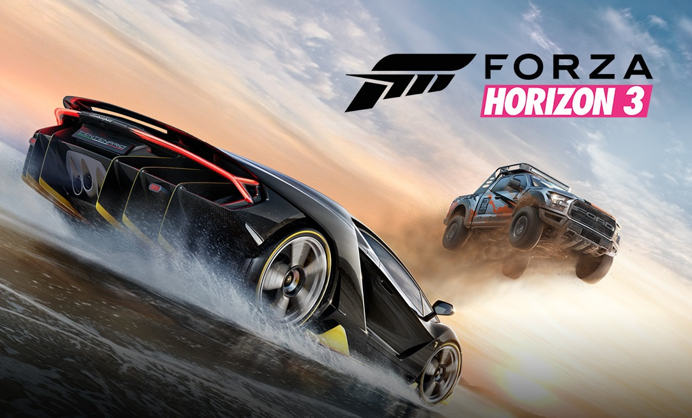

Gry Samochodowe

The Crew

Jak przystało na rasową „ścigałkę”, gracze mają okazję wcielić się w role kierowców samochodów i spróbować swoich sił w emocjonujących wyścigach ulicami amerykańskich miast. Twórcy dali nam dość szeroki asortyment aut, ale głównie pod względem ich przerobionych wersji, podzielonych na pięć różnorodnych kategorii.
Wreckfest

Wreckfest czerpie garściami z rozwiązań zastosowanych w serii FlatOut. W tej grze nie liczy się wyłącznie prędkość, ponieważ na torach toczy się ostra walka pomijająca zasady fair play. Możemy przeszkadzać rywalom, spychając ich pojazdy z trasy czy doprowadzając do kolizji, by ostatecznie całkowicie wyeliminować ich z gry.
Forza Horizon 3

Podobnie jak w dwóch poprzednich częściach cyklu, tak i w grze Forza Horizon 3 bierzemy udział w motoryzacyjnym festiwalu. Tym razem jednak nie występujemy tylko w roli zawodnika, ale również organizatora, dzięki czemu możemy wpływać na rodzaj samochodów używanych podczas zawodów, wybierać pogodę, porę dnia itd.
BeamNG.drive

Dlatego BeamNG.drive oferuje sandboksowy model rozgrywki, w którym swobodnie przemierzamy zróżnicowane lokacje o otwartej strukturze, oddając się przyjemności płynącej z jazdy i eksploracji. Robimy to za kierownicą jednego ze stosunkowo pokaźnej puli pojazdów, w pełni podatnych na uszkodzenia i szeroki zakres modyfikacji.
Need For Fpeed: Most Wanted

Need for Speed: Most Wanted stanowi kolejną część serii, rozwijanej od połowy lat dziewięćdziesiątych XX wieku. Po nocnych eskapadach z obu odsłon Need for Speed: Underground przyszedł czas na poruszanie się sportowym samochodem w warunkach zgoła odmiennych.
Poznaj najlepasze gry według mnie na pc. Wszystkie prawa zastrzeżone ©